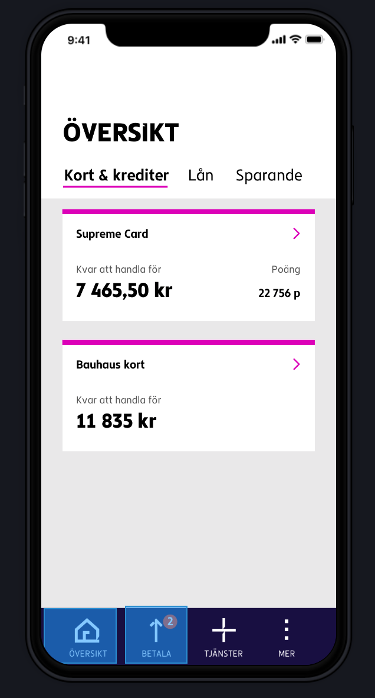
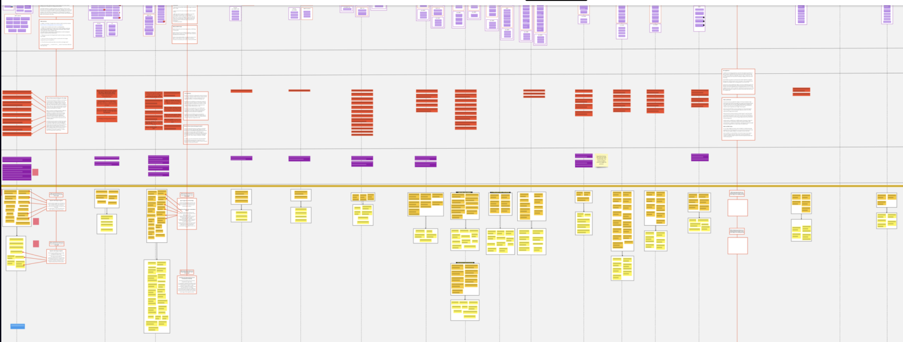
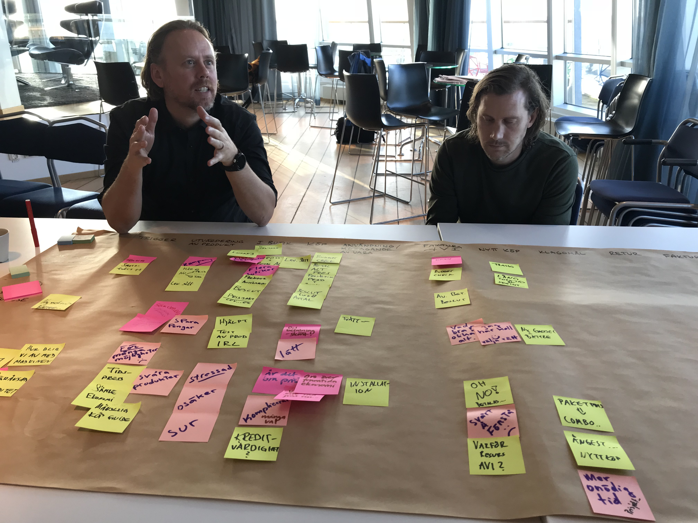
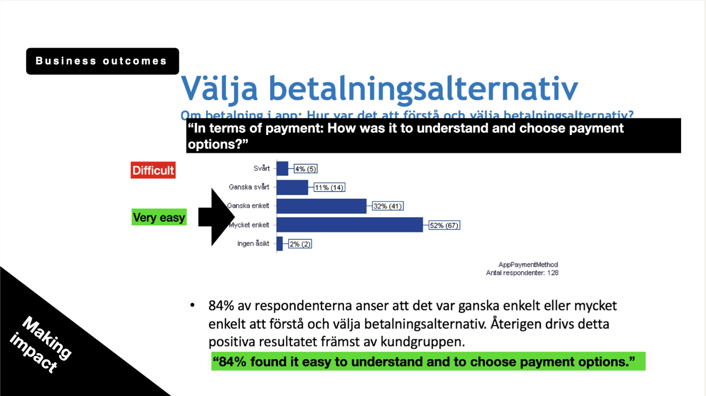
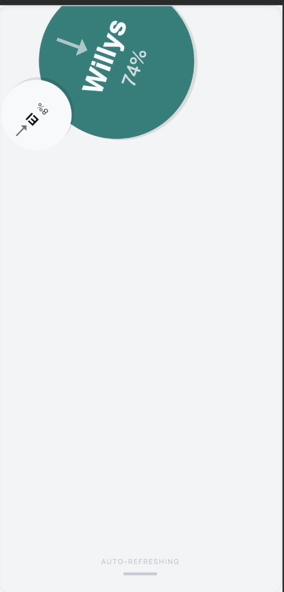
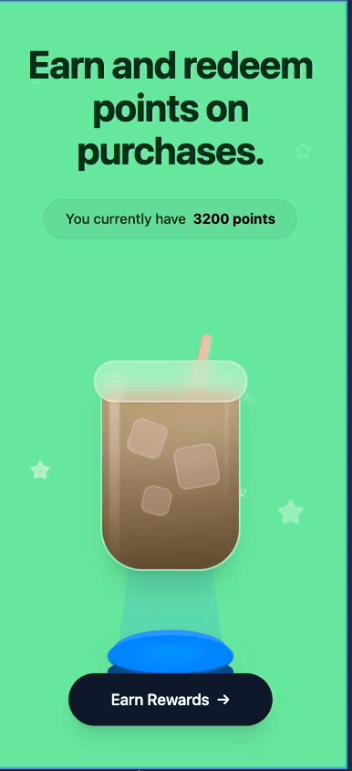
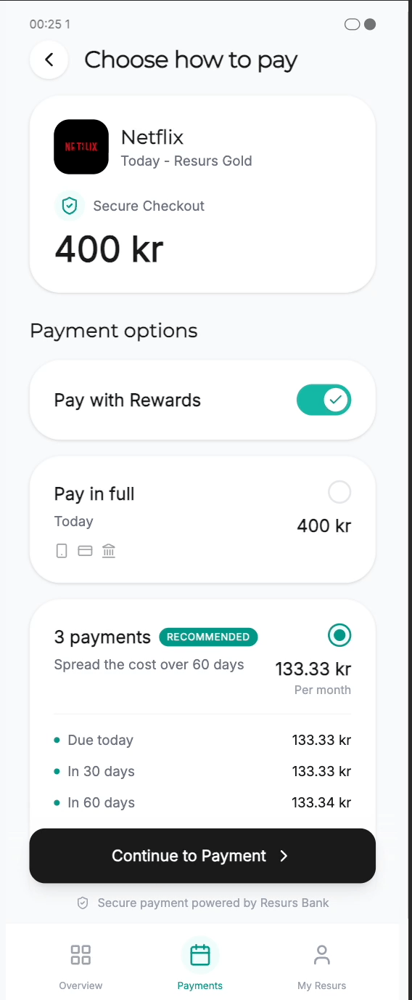

From fragmented to seamless.
Redesigning a high-stakes financial app for clarity, trust, and scale.
I re-architected key flows across a neglected mobile app, aligning user journeys with backend constraints and business priorities. The App Store rating rose from 2.2★ to 4.2★ in under 6 months — without rebuilding from scratch.

Earlier experience / app overviewA critical app that made simple tasks feel hard.
Cluttered screens and weak hierarchy created friction in payments and account access.
Confusing navigation and inconsistent behavior contributed to a 2.2★ App Store rating.
Fragmented services pushed people toward workarounds and support for basic actions.
We needed quick improvements while creating a foundation for long-term consistency.
Clarifying a broken journey.
I mapped the service with product, legal, and tech to make friction points, backend triggers, and handoffs visible.

Inclusive discovery & research.
Facilitated workshops to align teams on user problems and business needs.
Led interviews and usability tests across age groups and digital fluency levels.
Found hesitation around confusing copy, buttons people feared to tap, and legal disclaimers that obscured critical flows.

Where users dropped off. Where assumptions diverged.
Clarity in the critical moments.
The design response focused on reducing hesitation in critical moments.
I restructured key flows around clarity, hierarchy, and progressive disclosure so people could act with more confidence in sensitive financial contexts.
A clearer path through the product.

Selected product moments.
Three animated views from the evolving experience.


